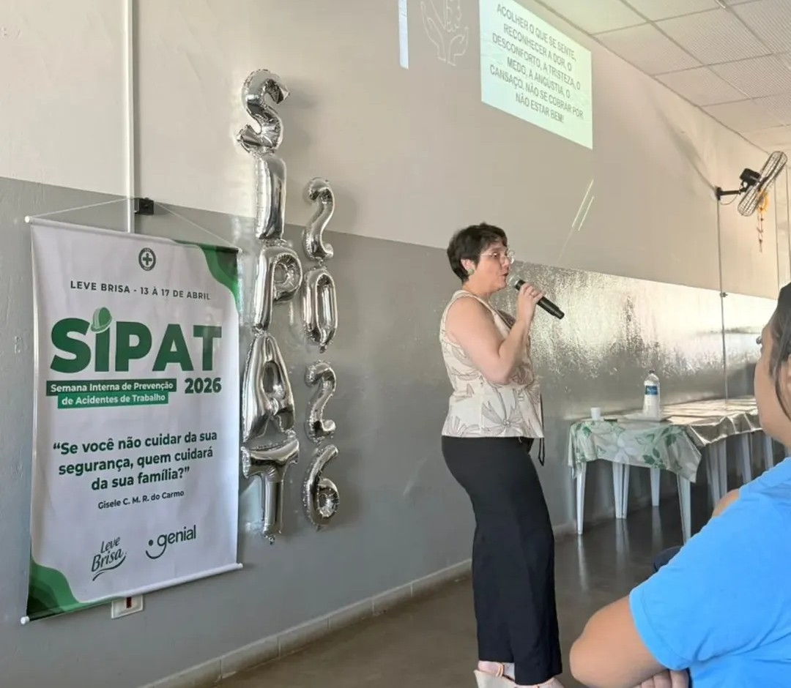
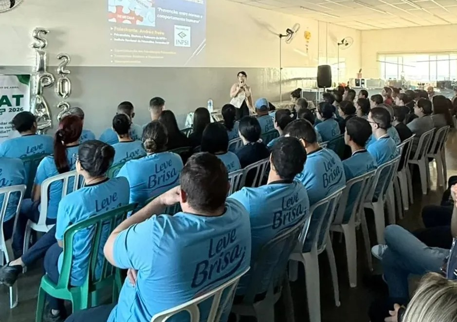
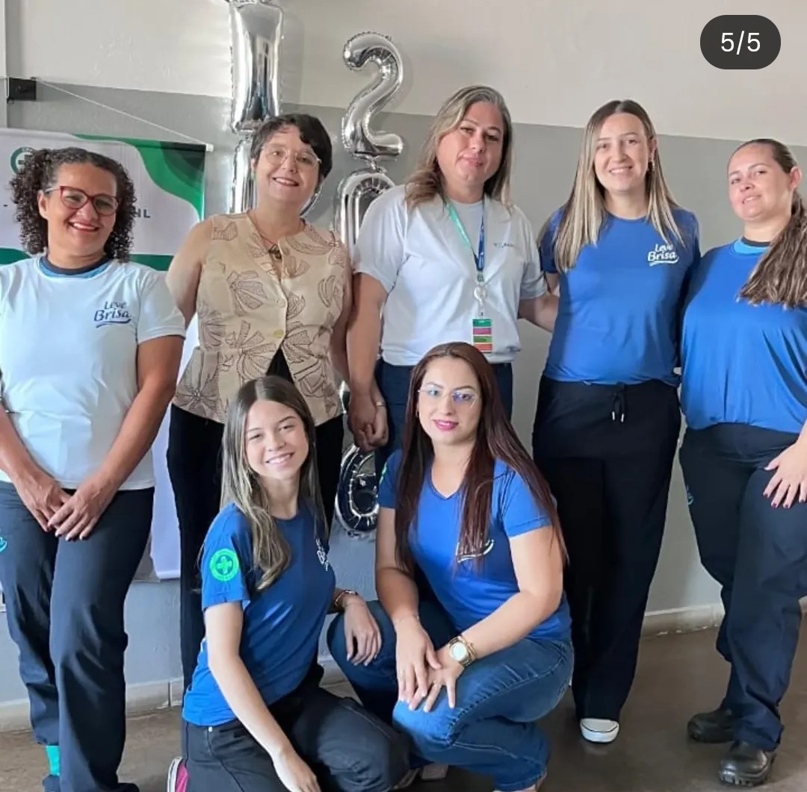
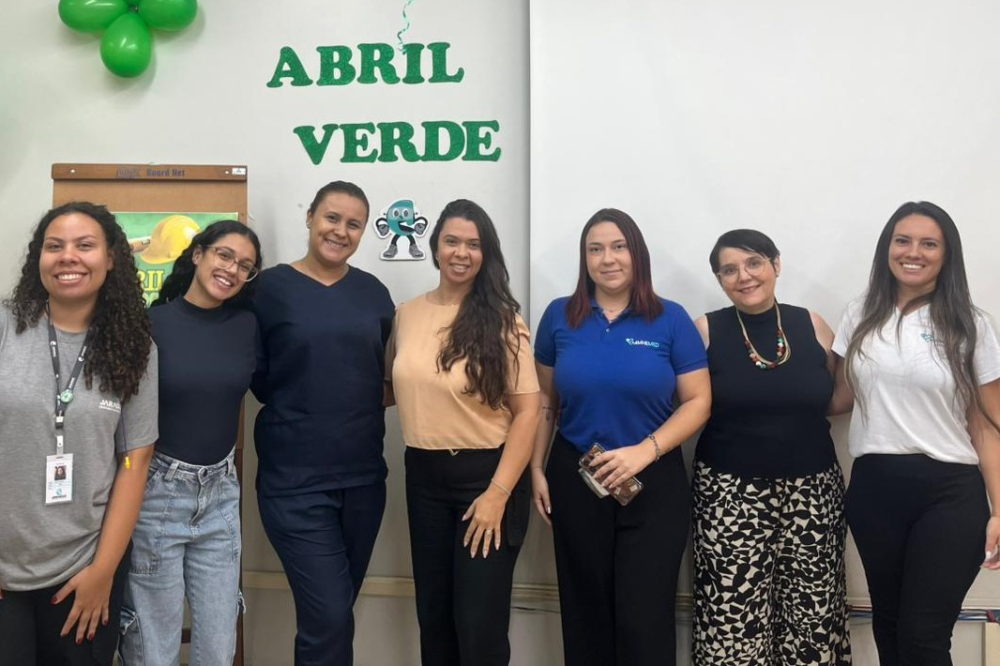
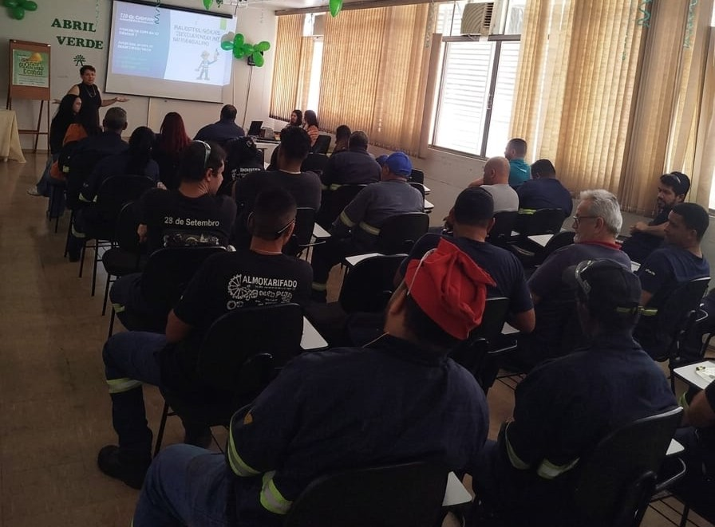
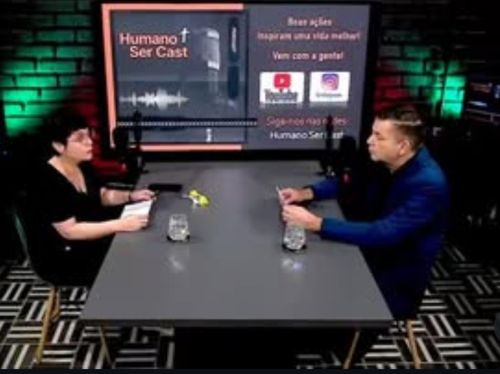

Palestras, Seminários e Cursos
A experiência com a Comunicação (Jornalista e Radialista), anterior a Psicanálise, são investidas em melhor atuação para eventos de empresas e corporativos, com temas que possam agregar ao desenvolvimento dos funcionários e melhor ambiente de trabalho.
Basta me chamar no WhatsApp.
Algumas experiências registradas ao longo de minha carreira:
Empresas Brisa Leve e Jaraguá Equipamentos
Temas ligados à saúde mental e segurança no trabalho, em palestras solicitadas pela Amhe Med Planos de Saúde.
Psicanálise na Educação
Seminários realizados para professores da Rede Municipal de Educação de Cabreúva/SP durante a pandemia, com o intuito de ajudar os professores naquele momento com os alunos.
Entre Nós
Projeto do INPSI Psicanálise em parceria com o Iguatemi Business, falando sobre saúde emocional.
Desenvolvimento Psíquico
Encontros voltados para profissionais da área da saúde falando sobre o desenvolvimento da mente humana.
Junto ao CVV
Abordagens essenciais sobre Ansiedade, Depressão, entre outros assuntos muito pertinentes à nossa atualidade.
Assim Podcast & Humano Ser Cast
Participação no "Assim podcast", com o jornalista Joel Robson. Atualmente ao lado de Anselmo Rolim Neto no podcast "Humano Ser Cast": conheça no Youtube.
Registros Fotográficos





